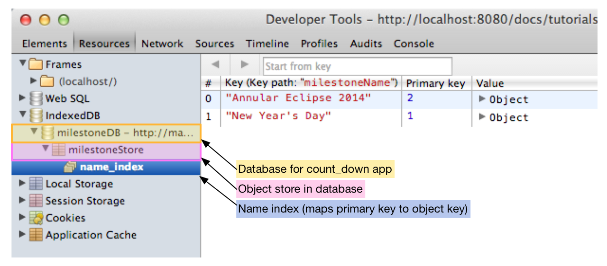

Use IndexedDB
Save data on the client.
Browsers provide several ways for your apps to store data on the client side. One storage option is IndexedDB—a web standard supported by many browsers. IndexedDB provides an implementation of an indexed database, in which each record is identified by a unique index or key, making data retrieval speedy. You can store large amounts of structured data, such as images, arrays, maps, and objects using IndexedDB. The standard does not specify size limits for individual data items or for the database itself, but browsers may impose storage limits.
IndexedDB provides several advantages. Your apps
- can have full functionality even if a network connection is not available.
- can cache data and restore state between invocations.
- won’t lose data if the network connection is interrupted.
- generate less network traffic.
- perform better because data management happens on the local computer rather than over the Internet.
This tutorial shows you how to use dart:indexed_db to store data to and retrieve data from the browser’s IndexedDB.
- Run the app
- About the app: The basics
- Details about IndexedDB
- Importing the IndexedDB library
- Checking for IndexedDB support
- Creating and opening a database
- Creating an object store
- Using a name index
- Using transactions
- Adding data
- Removing data
- Clearing all data
- Using a cursor to get all the records
- Other resources
- What next?
Run the app
The count_down app below maintains a list of milestones
and displays a countdown timer for each one.
Try it! Enter the name, date, and time of a milestone—your birthday, for example—and click the plus (+) button. The app starts a countdown timer and displays the amount of time remaining until the milestone occurs. The app updates the display every second.
Close this browser window and reload this page. The milestone you created still exists because the app stored it in an IndexedDB in the browser.
Use the minus (-) button to the right of a milestone to delete that milestone. Use the Clear button to delete all the milestones.
Using developer tools to look at the database
You can use the browser’s developer tools to explore the IndexedDB databases used by your apps. In Chrome, select View > Developer > Developer Tools, then choose Resources from the tabs along the top of the window. The following diagram shows the database for the count_down app with two milestones.
The count_down app has a single database named milestoneDB.
and within it, a single object store named milestoneStore.
In this example, each record in the object store
is a milestone stored as a Map.
The index, called name_index, associates each milestone
name with a database key allowing for searches by milestone name.

About the app: The basics
The count_down app uses a Model, View, View-model (MVVM) structure.

-
The View-model, in the center of the diagram, connects the View and the Model, using UI and Timer events to make changes to the Model. The MilestoneApp class is the primary class that implements the View-Model—it manages the timer, and implements the app’s business logic, which manages the information exchange between the Model and the View.
-
The View provides the user interface for the app. Two custom elements implement the View in the count_down app: CountDownComponent describes the user interface for the app as a whole, and MilestoneComponent describes the UI for an individual milestone. These components inform the View-model of UI events.
-
The Model contains and manages the data. The Model, implemented by the MilestoneStore class, manages a list of Milestone objects in memory and keeps an IndexedDB in sync with the list, saving the milestone data persistently. The View-model queries the Model upon initialization and uses Polymer data-bindings to keep the View in sync. Also, it uses Timer events to trigger updates in the Model.
The libraries used by the count_down app
The count_down app uses the following libraries:
| Library | Description |
|---|---|
| dart:indexed_db | Save data into an indexed database for persistence and offline capability |
| dart:async | Perform tasks asynchronously with Futures |
| dart:core | Use DateTime and Duration to manage time-related tasks |
| Polymer | Create UIs with custom elements and data binding. |
This tutorial explains the Dart API for IndexedDB used by the count_down app.
Details about IndexedDB
Some important facts you need to know about IndexedDB:
-
Each origin (host, protocol, and port) has its own set of databases. A unique name identifies each database within an origin. IndexedDB has a same-origin policy, which requires that the database and the app be from the same origin.
-
A database is identified by a name and version number. A database can have only one version at a time.
-
An object store is identified by a unique name. You can create an object store only during an “upgrade needed” event. You store data in records in an object store. A database can have multiple named object stores.
-
A transaction provides reliable data access and data modification on a database. All interactions with the data in the database must happen within the scope of a transaction.
-
A record is a key-value pair, where the key is a unique identifier for the corresponding data value. You can set your own keys or you can have the object store create them for you.
-
An index is a specialized object store that maps database keys to the key field in the saved object. Using an index is optional.
-
An app may use multiple databases, each of which may have multiple object stores, each of which may have multiple records.

IndexedDB in the count_down app
The count_down app uses one database,
named milestoneDB with the version number 1,
and one object store named milestoneStore.
The app stores a milestone object as a Map;
both the key and the value in the map are strings.
The milestoneName field is the unique name of the milestone.
The happensOn field is the date and time concatenated together.
This is enough information to restore the state of the app
when it’s restarted.
Because the milestone names are unique, the app could use them as primary keys in the database. Instead, for illustration purposes, the app uses a primary key generated by the database. You can see this in the Developer Tools window:

Importing the IndexedDB library
To use the Dart IndexedDB API, your app must import the IndexedDB library provided with the Dart SDK:
import 'dart:indexed_db' as idb;
Checking for IndexedDB support
Use the getter supported from the IdbFactory class
to determine if IndexedDB is supported.
bool idbAvailable = IdbFactory.supported;
If supported is false, your app could
- throw an exception and quit,
- use an alternative API,
such as
window.localStorage, for client-side storage, - run anyway, sacrificing persistence and offline capability,
- or, like the count_down app, disable the UI and display an error message.
Creating and opening a database
Use window.indexedDB.open() to create a new database
or to open an existing database.
Whether it opens or creates the database
depends on the name and version number you pass in as parameters.
-
To open a database, use the name and current version number of an existing database.
-
To update to a new version, call open() with the name of an existing database and a higher version number. (A database can have only one version at a time; it can’t exist in multiple versions at once.) This fires an upgrade needed event.
-
To create a completely new database, open it with a new, unique name. This also fires an upgrade needed event.
Here’s the function in the MilestoneStore class that creates and opens the database:
Future open() {
return window.indexedDB.open('milestoneDB',
version: 1,
onUpgradeNeeded: _initializeDatabase)
.then(_loadFromDB);
}
The first two parameters indicate the name and version of the
database to open.
The first time the count_down app runs from a particular origin,
milestoneDB version 1 gets created and opened.
The next time the app runs from that same origin,
the database is simply opened.
The third parameter, onUpgradeNeeded,
provides a callback function that gets called
when an upgrade needed event is fired,
which happens when a new database is created
or the version of a database is updated.
This gives your app an opportunity to create an object store.
The only place you can create an object store
is within an upgrade needed event.
You must have an object store to add records to the database.
The next section covers how to create an object store.
The following flow chart describes the logic of the
window.indexedDB.open() function.

Because creating and opening a database can take time,
window.indexedDB.open() returns a Future object,
which runs asynchronously and returns a value, the database object,
sometime in the future.
The database object is returned to a callback function
registered with then().
In this example,
the callback function is called _loadFromDB().
Using cursors,
_loadFromDB() reads all the milestones
from the database and populates the app.
The details are covered in
Using a cursor to get all the records.
Creating an object store
When a new database is created, it contains no object stores. The only place you can create an object store is during an upgrade needed event. Fortunately, an upgrade needed event is fired when a new database (or a new version of a database) is created.
The callback function for upgrade needed events
in the count_down app is _initializeDatabase.
This function creates an object store and an index.
static const String MILESTONE_STORE = 'milestoneStore';
static const String NAME_INDEX = 'name_index';
void _initializeDatabase(idb.VersionChangeEvent e) {
idb.Database db = (e.target as idb.Request).result;
var objectStore = db.createObjectStore(MILESTONE_STORE,
autoIncrement: true);
objectStore.createIndex(NAME_INDEX, 'milestoneName', unique: true);
}
The code gets the database object from the VersionChangeEvent object that is passed into the callback function as an argument.
Use the Database object’s createObjectStore() method
to create a new object store with the given name.
Each object store must have a unique name.
The count_down app uses one object store called milestoneStore.
All the countdown milestones are stored and retrieved
in this object store.
The code sets autoIncrement on the object store to true.
When autoIncrement is true,
the database generates unique, primary keys for you,
which saves you the trouble of ensuring unique keys.
Finally, _initializeDatabase creates a name index.
Using a name index
An index provides a lookup table. You can associate a primary key with a field in the stored objects. In the example, the index associates a primary key with the milestoneName field.
Using an index provides two benefits:
- you can search on a field in the object instead of by primary key,
- and you can use the index to ensure the value of the field is unique.
The count_down app creates an index at the same time it creates the object store: during an upgrade needed event, which is the the only time you can create an index.
static const String NAME_INDEX = 'name_index'; ... objectStore.createIndex(NAME_INDEX, 'milestoneName', unique: true);
The createIndex method takes three parameters:
- the name of the index, here ‘name_index’. This must be unique.
- the key path, which indicates the field in the stored object to index.
- unique, a boolean value. When true, the index ensures that the milestone name is unique. In the count_down app, if you try to add a milestone with the same name as another, it is this index that causes the add() to fail.
Using transactions
All database operations must be performed within a Transaction.
Get a transaction from the Database object,
which in the count_app is named _db.
Transaction t = _db.transaction(storeNameOrNames, mode);
The first argument to transaction() is the scope of the transaction.
In the count_down app,
the scope is always milestoneStore,
the lone object store in the database,
but you could specify multiple object stores.
For efficiency, you should specify only the stores you need.
The second argument is a string that specifies the mode;
it can be readwrite or readonly or versionchange.
The count_down app uses only readwrite and readonly transactions.
Use readwrite transactions only when necessary:
readonly transactions are more efficient,
and you can run multiple readonly transactions
concurrently on overlapping scopes,
but only one readwrite transaction.
Once you’ve created a transaction, you can perform one or more operations using that transaction. Database operations can take time, so the work is performed off of the main UI thread and results are provided via Futures. Each operation uses a Future, which completes when the operation is complete. The transaction itself also uses a Future, which completes when all operations on the transaction complete.
For example, you might use one transaction to add multiple records to an object store. Each add is a separate operation and uses a separate Future. The following diagram shows the logic flow of a program that adds three records to a database. When all three add operations complete, the transaction completes.

Many database transactions follow this pattern:
- Create a transaction on an object store.
- Perform one or more operations using the transaction.
- Use the operation’s callback function to perform a task when the operation completes successfully. For example, when adding records to a database, you can get the key generated by the database for the added record.
- Use the
transaction.completedcallback function to perform a task when all the operations complete successfully. Generally, the count_down app uses this callback function to keep the list of milestones in sync with the database.
Adding data
Here’s the code that adds a new record to the database.
The code creates a new Milestone object and converts it to a Map, then creates a new readwrite Transaction on the object store.
Then, to add the milestone Map to the database,
the code calls the add() method on the object store.
and registers a callback function using then().
Because the object store was created with autoIncrement: true,
adding a record to the database automatically creates
a unique primary key for the new record.
This key is returned as a parameter to the callback function.
Finally, the code registers a callback function for the transaction.
When the add operation has been performed on the database, the Future related to the add operation completes and the callback function is called with the auto-generated key. The count_down app saves the key in the Milestone object.
At this point, it is important to note that although the add operation is complete, the transaction is not! Any changes made to the database by the operation are not available until the transaction completes.
When all operations on a transaction complete, in this case, a single add operation, the transaction completes and its callback function is called. In the transaction’s callback function, the count_down app adds the milestone to the list in memory and the Future returns with the new milestone object (and the View-model starts the Timer).
Removing data
Here’s the code that removes a key-value pair from a database.
var transaction = _db.transaction(MILESTONE_STORE, 'readwrite');
transaction.objectStore(MILESTONE_STORE).delete(milestone.dbKey);
return transaction.completed.then((_) {
milestone.dbKey = null;
milestones.remove(milestone);
});
Again the code creates a readwrite transaction on a named object store.
To delete a key-value pair, the mode must be readwrite.
Use the delete() method on the object store to delete a key-value pair.
Specify the key as the argument to delete().
When the transaction completes successfully, the count_down app can safely remove the milestone from the list in local memory and stop the timer, if necessary.
Note that this code does not specify a callback function for the delete operation, only for the transaction. The task it needs to do, namely to remove the milestone from the list in memory, can occur when the transaction completes.
Clearing all data
Use the clear method on the object store to remove all records.
var transaction = _db.transaction(MILESTONE_STORE, 'readwrite');
transaction.objectStore(MILESTONE_STORE).clear();
return transaction.completed.then((_) {
milestones.clear();
});
Using a cursor to get all the records
When the app starts, if there’s an existing database and that database has milestones, the count_down app reads the records from the database and initializes the internal list of milestones from that information.
The _loadFromDB() method
gets called after the database has been successfully opened.
It is within this method that the database is read.
Future _loadFromDB(Database db) {
_db = db;
var trans = db.transaction(MILESTONE_STORE, 'readonly');
var store = trans.objectStore(MILESTONE_STORE);
var cursors = store.openCursor(autoAdvance: true).asBroadcastStream();
cursors.listen((cursor) {
var milestone = new Milestone.fromRaw(cursor.key, cursor.value);
milestones.add(milestone);
});
return cursors.length.then((_) {
return milestones.length;
});
}
Because getting records does not modify the database, this transaction is readonly.
You can use a Cursor object to step through the records in the database one by one, creating a Milestone object for each. The object store uses a stream to fire an event for each record retrieved from the database. By listening on the stream, your code can be notified for each record read. The count_down app creates a corresponding Milestone object in the internal list in memory for each database record retrieved.
Open a cursor on a transaction’s object store with openCursor.
The cursor indicates the current position in the database.
The count_down app opens a cursor and sets the optional
autoAdvance argument to true.
This means that after reading a record from the database
and returning its value,
the cursor advances automatically to the next record.
If you don’t use autoAdvance,
your code has to use the next() method
to advance the cursor to the next record.

The openCursor() method returns a stream on which you can listen for events. Here, the stream is a broadcast stream, so the app can listen both for read events and for a final count of records retrieved.
For each record retrieved from the database,
an event fires and the callback function is called.
A
CursorWithValue
object, named cursor in this example,
is passed to the callback function.
Use cursor.key to get the key for the record just retrieved.
Use cursor.value to get the value for that record.
The _loadFromDB method returns a Future that returns the length of the stream.
Other resources
- For information about Futures, see Use Future-Based APIs and Futures and Error Handling.
- For information about Polymer, read Define a Custom Element.
What next?
You’ve completed the tutorials! Check out the Dart code samples and articles.